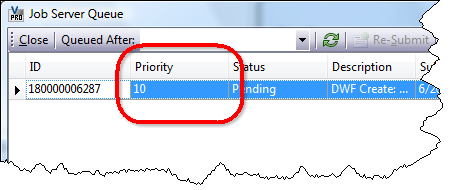

07/11/2011
Some people have noticed that there is a new job queue column called Priority. This is an API feature, at least for now. So you have to use custom programming if you want to make use of this value. From Vault Explorer, you can see the value, but you can't do anything with it.

Below is a description of how NOT to use the priority feature:
| You have 3 tasks (A, B and C) which you want to complete in order. So you queue up all three jobs at once, giving A a priority of 1, B a priority of 2 and C a priority of 3. Now you are guaranteed that they will get executed in order, right? Wrong Because there may be multiple Job Processors running and because Job Processors can be specialized by type, you are not guaranteed the order. It's technically possible for C to get executed first, with B second and A last. Or any other permutation. |
Now for an example of the intended use:
| You are doing a batch operation using the job queue. This operation will take several days, involving thousands on jobs on the queue. In the meantime, the vault is still in use by end users. You want don't want the batch operations to interfere with user-driven operations. So you queue the batch jobs with a low priority while user jobs get a high priority. Correct The priority feature lets you move jobs to the front of the line if needed. Likewise, you can indicate jobs that should run in the background. |
The way it works is pretty basic. The priority value is an integer. The lower the number, the higher priority, with 1 being the highest possible priority. When the Job Processor reserves a job, it will reserve the job with the lowest priority for a type that the Job Processor supports. If there are 2 jobs with the same priority on the queue, then the first one added is the first one processed.
Jobs with types that are not supported by a Job Processors are basically invisible to that process. So the priority is based on only visible jobs. For example, the Job queue consists of job A (priority 1) and job B (priority 7). The Job Processor supports only type B. The result is that job B is read off the queue next. Job A will not get processed by this Job Processor since it is a unsupported type.
When deciding what priority custom jobs should have, it helps to have some context. Vault Explorer and the CAD plug-ins use 10 as the default priority value for jobs. Autoloader uses priority 100 when it queues jobs. Jobs triggered automatically via a lifecycle state change are also queued as priority 100.
Once a job is on the queue, it's priority cannot be changed. The workaround is to remove it from the queue and re-add it with a different priority. This can easily be done through the API, but there is currently no UI command to do this task.